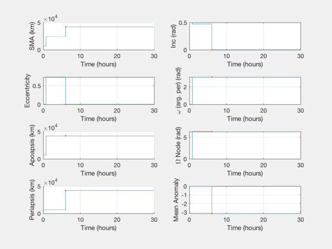
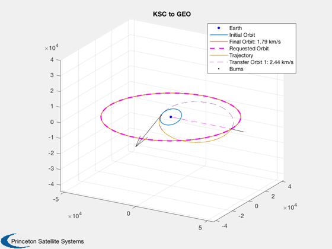
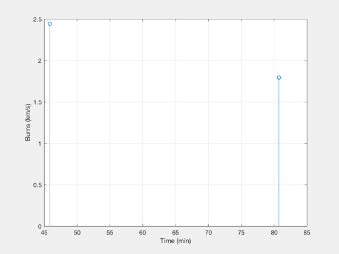

Contents
Multi-Mission Single-Rev Orbit Transfer using OptimizeImpulsiveLVLH
Select initial and final orbits from switch statement. Impulsive burns only.
See also: OptimizeImpulsiveLVLH, PlotElementsImpulsive, PlotImpulsiveTrajectory, BurnTimesImpulsive
%-------------------------------------------------------------------------- % Copyright (c) 2018 Princeton Satellite Systems, Inc. % All rights reserved. %-------------------------------------------------------------------------- % Since 2018.1 %--------------------------------------------------------------------------
Select mission
demoString = 'KSC to GEO'; % Is there a limit to delta-V per burn? [] for no limit. burnMaxDeltaV = []; % km/s % Orbital elements, [a,i,W,w,e,M], in km and radians % elementMask: Orbital elements about which we care, 1 for target, 0 for % neglect. [a,i,W,w,e,M,apoapsis,periapsis]. Don't use more than 2 of % a,e,apoapsis,periapsis. switch demoString case 'KSC to GEO' % 300 km altitude LEO, Kennedy Space Center lowest inclination elInitial = [6384+300 28.6*pi/180 0 0 0 0]; % GEO elFinal = [42164 0 0 0 0 0]; % (Circular equatorial final orbit) Neglect orbital phase, % longitude of ascending node, and argument of periapsis elementMask = [0 1 0 0 0 0 1 1]; case 'LEO to MEO' % Hohmann test % 300 km altitude LEO, equatorial elInitial = [6384+300 0*pi/180 0 0 0 0]; % MEO elFinal = [20000 0*pi/180 0 0 0 0]; % Neglect orbital phase only elementMask = [0 1 1 1 0 0 1 1]; case 'Baikonur to LTO' % 300 km altitude LEO, Baikonur Cosmodrome lowest inclination elInitial = [6384+300 46.0*pi/180 0 0 0 0]; % Moon elFinal = [385000 23.4*pi/180 0 0 0 0]; % (Lunar transfer) Neglect orbital phase, inclination, and periapsis elementMask = [0 0 1 1 0 0 1 0]; case 'Kourou to GTO' % 300 km altitude LEO, Kourou lowest inclination elInitial = [6384+300 5.2*pi/180 0 0 0 0]; % GEO elFinal = [42164 0 0 0 0 0]; % (Transfer to circular) Neglect orbital phase, lattitude of % ascending node, argument of periapsis, and periapsis elementMask = [0 1 0 0 0 0 1 0]; case 'GTO to GEO' % Highly eccentric GTO orbit elInitial = [24582 0.001 0 pi 0.7 0]; % Circular GEO elFinal = [42164 0 0 0 0 0]; % (Transfer to circular) Neglect orbital phase, lattitude of % ascending node, argument of periapsis elementMask = [0 1 0 0 0 0 1 1]; case 'LEO to ISS' % 100 km altitude LEO, ISS inclination elInitial = [6384+100 51.6*pi/180 0 0 0 0]; % ISS elFinal = [6384+430 51.6*pi/180 0 0 0 0]; % (Circular final orbit) Neglect orbital phase elementMask = [0 1 1 0 0 0 1 1]; otherwise error('Sorry that demo does not exist.') end if(length(find(elementMask([1 5 7 8])))>2) error('Please choose only 2 of a, e, apoapsis,periapsis.') end
Perform targeting and optimization
Each burns row is [dv,phi,theta,time] in km/s, radians, and proportion of the pre-burn orbital period. phi is azimuthal angle (around z) and theta is the polar angle (FROM z)
[burns,elOutput,opt] = OptimizeImpulsiveLVLH( elInitial, elFinal );
Plot the results
PlotElementsImpulsive(elInitial, burns, 'lvlh'); hPlot = PlotImpulsiveTrajectory(elInitial, burns, elFinal, 'lvlh'); titleString = demoString; if ~isempty(burnMaxDeltaV) titleString = strcat(titleString,', limited to',{' '},num2str(burnMaxDeltaV),' km/s'); end title(hPlot.CurrentAxes,titleString) fprintf('\nThe total delta-V for this burn was %d km/s. \n',sum(abs(burns(:,1)))); disp('Final Elements Target Mask') disp([elOutput' elFinal' elementMask(1:6)']) disp('') disp(' DV phi theta time') disp(burns) % Report the relevant quantities burnPlotTimes = BurnTimesImpulsive(elInitial, burns); hoursPlot = max(burnPlotTimes)/60/60; deltaVTotal = sum(abs(burns(:,1))); fprintf('The total delta-V for these burns was %d km/s. \n',deltaVTotal); fprintf('There were %d burns \n',size(burns,1)); fprintf('the largest having delta-V %g km/s \n',max(burns(:,1))); fprintf('the last occurring %d hours after beginning. \n',hoursPlot); figure('Name','Burn Magnitudes') [burnTs,tLs] = TimeLabl(burnPlotTimes); stem(burnTs,burns(:,1)') ylabel('Burns (km/s)') xlabel(tLs) grid on %--------------------------------------
The total delta-V for this burn was 4.237485e+00 km/s.
Final Elements Target Mask
1.0e+04 *
4.216331363980927 4.216400000000000 0
0.000000000317206 0 0.000100000000000
0.000627843703412 0 0
0.000314220025121 0 0
0.000000000188309 0 0
-0.000313982331907 0 0
DV phi theta time
Columns 1 through 3
2.443151139852965 -0.071727867050770 0.124573249470588
1.794333797334187 -0.017672018638599 -0.886564100625120
Column 4
0.505705064995488
0.501194306598001
The total delta-V for these burns was 4.237485e+00 km/s.
There were 2 burns
the largest having delta-V 2.44315 km/s
the last occurring 1.345348e+00 hours after beginning.
  